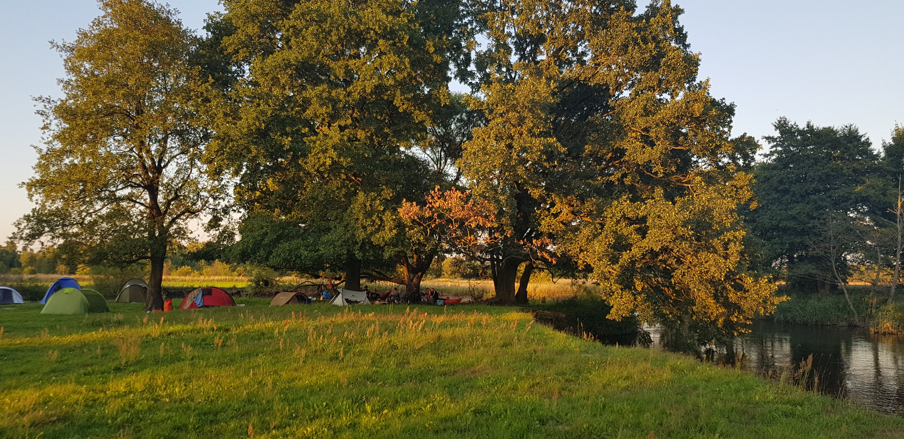
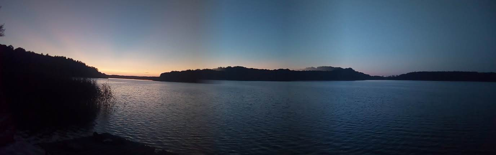
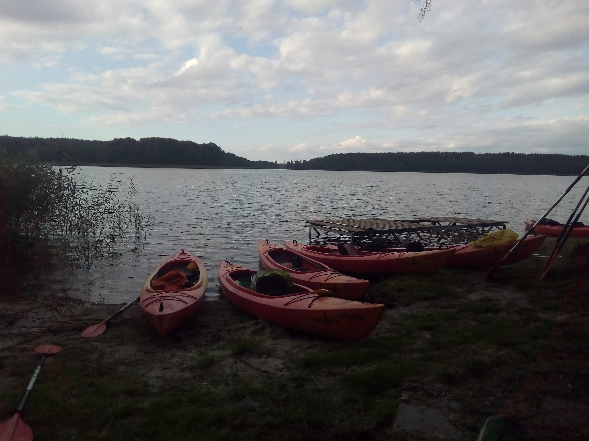
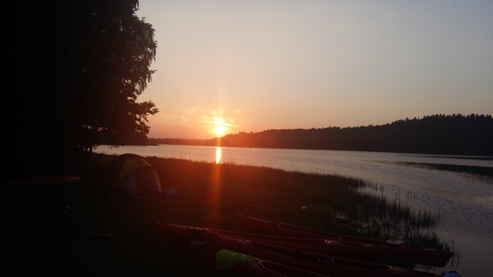
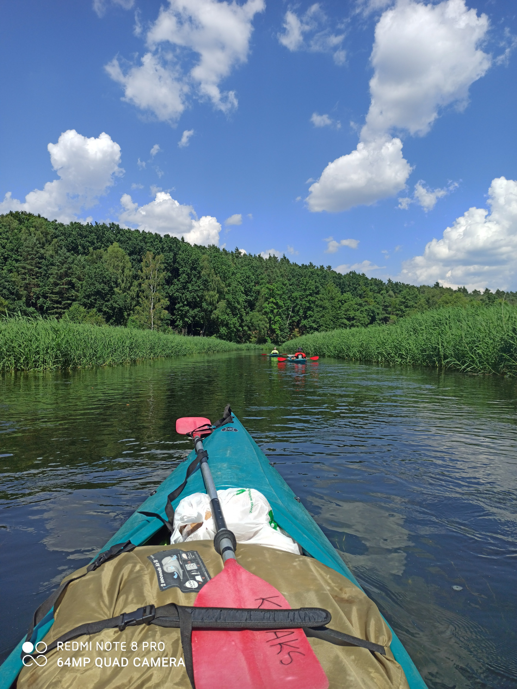

BRDA
Brda jest jedną z rzek w północnej Polsce, która stanowi bardzo popularny szlak kajakowy. Niewątpliwym atutem tego cieku wodnego jest jego urozmaicenie. Dość duża różnica wzniesień na trasie, jaką przewidują spływy kajakowe, sprawia, że Brda ma miejscowo bystry nurt. Znaczny odcinek szlaku zlokalizowany jest w otulinie Parku Narodowego Bory Tucholskie oraz na terenie Zaborskiego i Tucholskiego Parku Krajobrazowego. To właśnie piękne krajobrazy oraz urozmaicony krajobraz przyciągają w te regiony coraz więcej wodniaków Brda pomimo miejsc o szybszym nurcie stanowi dość łatwy szlak, na którym swych sił mogą spróbować także początkujący. Istotną zaletą są również łagodne brzegi rzeki o suchym, piaszczystym podłożu, które umożliwiają przyjemny odpoczynek.




DRAWA
Atrakcje
- Drawski Park Krajobrazowy
- Drawieński Park Narodowy
- Rezerwat - "Drawski Matecznik"
- Elektrownia wodna Kamienna
- Rokokowy pałac we wsi Drawsko
- Poligon wojskowy - zakaz wstępu
- Ruiny zamku z XIII wieku w Złocieńcu
Trasy
- Prostynia - Rościn - 6km
- Rościn - Drawno - 10km
- Drawno - Barnimie - 11km
- Barnimie - Bogdanka - 10km
- Bogdanka - Pstrąg - 15km
- Pstrąg - Stare Osieczno - 11km
- Stare Osieczno - Przyborowo - 16km

ŁUPAWA
To nie lada wyzwanie zaliczana jest do najtrudniejszych miejscami niebezpiecznych szlaków kajakowych na Pomorzu. Rzeka najpierw toczy swe wody przez interesujące krajobrazowo jezioro Jesień. Kolejno jako wyżynny potok przełamuje się przez pasma moren, zwalonych drzew aby w końcu zmieszać swe wody na jez. Gardno teren Słowiańskiego Parku narodowego. Łupawa to rzeka, która stawia przed kajakarzami bardzo wysokie wymagania więc kto nigdy nie zamoczył wiosła niech lepiej zrezygnuje. Krótko mówiąc Łupawka to rzeka kryjąca na swej trasie dużą ilość przenosek, kamieni, sztucznych spiętrzeń, śluz i elektrowni. Trasa wymarzona dla osób kochających eskapady z dreszczykiem emocji oraz bezpośredni kontakt z naturą. Czas spływu 4 - 6 dni.
Hello brda20
Hello contact